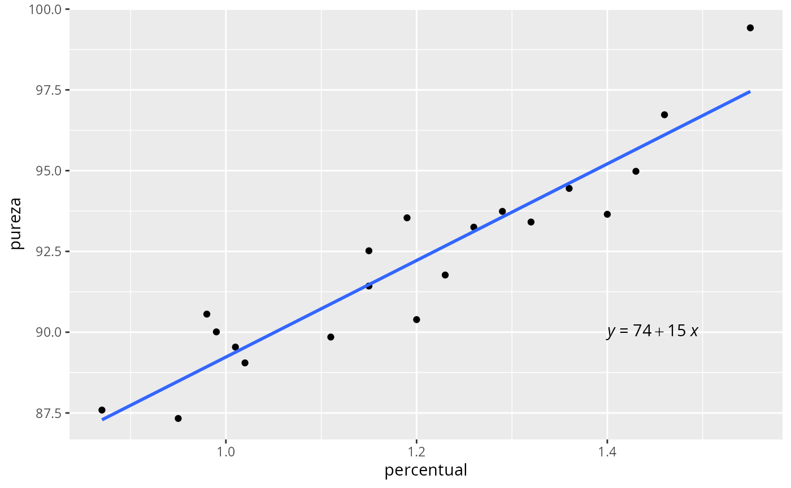

library(reglin)
library(tidyverse)
library(ggpubr)
data(pureza)
glimpse(pureza)
#> Rows: 20
#> Columns: 2
#> $ percentual <dbl> 0.99, 1.02, 1.15, 1.29, 1.46, 1.36, 0.87, 1.23, 1.55, 1.40,…
#> $ pureza <dbl> 90.01, 89.05, 91.43, 93.74, 96.73, 94.45, 87.59, 91.77, 99.…
ggplot(pureza, aes(x=percentual, y=pureza)) +
geom_point() +
geom_smooth(method = "lm", se = FALSE) +
stat_regline_equation(label.x = 1.4, label.y = 90, aes(label = after_stat(eq.label))) 
fit <- lm(pureza ~ percentual, data = pureza)
summary(fit)
#>
#> Call:
#> lm(formula = pureza ~ percentual, data = pureza)
#>
#> Residuals:
#> Min 1Q Median 3Q Max
#> -1.83029 -0.73334 0.04497 0.69969 1.96809
#>
#> Coefficients:
#> Estimate Std. Error t value Pr(>|t|)
#> (Intercept) 74.283 1.593 46.62 < 2e-16 ***
#> percentual 14.947 1.317 11.35 1.23e-09 ***
#> ---
#> Signif. codes: 0 '***' 0.001 '**' 0.01 '*' 0.05 '.' 0.1 ' ' 1
#>
#> Residual standard error: 1.087 on 18 degrees of freedom
#> Multiple R-squared: 0.8774, Adjusted R-squared: 0.8706
#> F-statistic: 128.9 on 1 and 18 DF, p-value: 1.227e-09